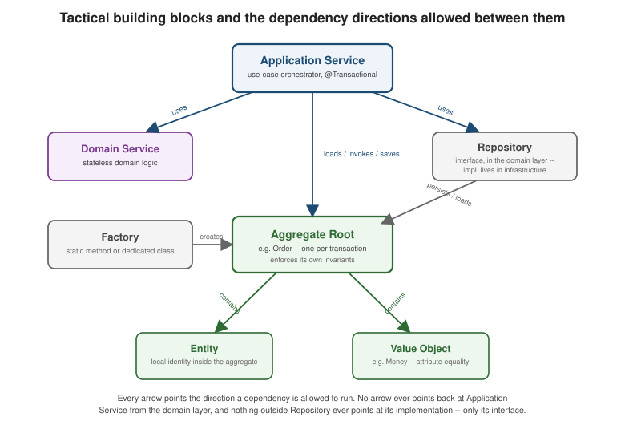

Repositories, Factories, and Domain Services
|
This content was generated with the assistance of AI and should be verified against the official documentation before being relied on in production. |
Entities, Value
Objects, and Aggregates cover the building blocks that carry a
domain model’s actual state and behavior. This page covers the supporting cast around them: how an aggregate gets
created in the first place, how it gets persisted and reloaded without the domain ever seeing SQL, and where a
piece of business logic belongs when it is real but does not belong to any single entity or value object. None of
repositories, factories, or domain services hold domain state of their own — that is precisely what
tells them apart from an aggregate — but all three exist because an aggregate cannot do everything by itself. The
running example stays the same e-commerce Order service used throughout this section, on the same Java 21 /
Spring Boot 4.1.x / Spring Data JPA baseline
Structuring the Code establishes, and this page’s code
extends — rather than replaces — the PlaceOrderCommand/PlaceOrderService pair that page already defines.
Repositories
A repository gives the illusion of an in-memory collection of aggregates, one repository per aggregate root
and never one per entity or table. The running example has exactly one: OrderRepository. There is no
OrderLineRepository, because OrderLine is not an aggregate root — it has no existence, and no repository, of
its own outside the Order it belongs to, exactly the "only the root is externally referenceable" rule
Aggregates states in full.
The interface itself lives in the domain layer, com.example.order.domain.OrderRepository, not in
infrastructure, and its two methods (Order findById(OrderId id) and long save(Order order), shown in full in
the code section below) are deliberately collection-shaped. Reading findById/save the way a Map or a List
would read them is exactly the point: nothing about this
signature says "run a SELECT against the orders table" or "issue an UPDATE`" — it says "get me the order
with this identity" and "put this order back," the same two operations a caller could perform on an in-memory
collection if the whole aggregate universe fit in RAM. That framing is what keeps `Order, PlaceOrderService,
and every other domain/application class ignorant of SQL, connection pools, or an ORM’s session lifecycle; they
depend on this interface and nothing about how it is implemented.
The implementation, by contrast, belongs in infrastructure, never in the domain — OrderRepositoryImpl, shown
in full below, is the only class in the Order context that imports Spring Data JPA types on the domain’s behalf. A
repository’s query methods also always return whole aggregates, Order in full, never a partial row projection
or a handful of selected columns; a projection tuned for a read-only screen is a query model, which is
CQRS's concern, not this page’s — mixing the two is a common way for a
"repository" to quietly turn back into a data-access object with dozens of ad hoc finder methods.
The Spring Data JPA mapping for OrderRepository has four pieces, all shown together in the code section below:
an OrderJpaEntity (@Entity, @Table(name = "orders")) that reuses the OrderLineEmbeddable/
@ElementCollection mapping Value Objects already defines for
OrderLine, and the OrderIdConverter Entities already defines for
the typed OrderId; a Spring Data OrderJpaRepository interface that does the actual JPA/Hibernate work; an
OrderRepositoryImpl adapter implementing the domain’s OrderRepository port and converting OrderJpaEntity to
and from Order at that boundary; and an InMemoryOrderRepository test double, backed by a plain Map, for
application-service unit tests that should not need a real database to verify `PlaceOrderService’s orchestration
logic.
Factories
A plain constructor is enough when an object’s invariants are local to its own fields. It stops being enough the
moment creating a valid instance depends on an invariant that spans several objects at once, or on a rule that
only applies at the moment of creation and never again afterward — which is exactly Order’s situation. The
canonical `Order in Entities keeps its constructor private for
precisely this reason: nothing outside Order itself is allowed to assemble an Order by calling new Order(…)
directly, because doing so would bypass whichever invariant the real construction path enforces. A factory is
the pattern name for "a method (or class) whose whole job is producing a valid instance of something, enforcing
whatever multi-field or point-in-time invariant a bare constructor cannot."
Order shows two static factories that look superficially similar but do genuinely different jobs, and confusing
them is one of the more common DDD-in-practice mistakes:
-
Creation —
Order.place(PlaceOrderCommand)builds a brand-new order from a customer’s intent, enforces every creation-time invariant (the minimum order amount, in this running example), and raises theOrderPlaceddomain event that says this creation actually happened. -
Reconstitution —
Order.reconstitute(OrderId, CustomerId, List<OrderLine>, OrderStatus, long)rebuilds an order that already exists, from data a repository has already loaded out of the database. It trusts that data was already valid when it was saved, so it re-checks nothing and raises no events — an event says something just happened, and loading a five-day-old order out of a table is not something happening now.
The two are easy to conflate because both hand back an Order, but only one of them is a creation in the domain
sense; a repository implementation that accidentally called Order.place(…) while loading rows back out of the
database would silently re-publish OrderPlaced events for orders that were placed days ago — exactly the bug
class this two-factory split exists to make impossible by construction. This page reuses Order.place(…) by
reference only — the one-line call site already shown inside PlaceOrderService, OrderCreation creation =
Order.place(command); — without redefining the method itself; its full body, and the minimum-order invariant it
enforces, live on Aggregates.
A factory can also hide a concrete type from its caller entirely: a factory method’s declared return type can be
an interface, or one specific variant of a sealed hierarchy, without the calling code ever naming the concrete
class it got back — useful whenever which subtype gets constructed depends on input the caller should not have
to branch on itself. Neither Order.place nor Order.reconstitute needs this (Order has exactly one concrete
shape), but it is worth knowing as a reason a factory earns its keep even when no multi-field invariant is
involved.
Both of Order’s factories are static factory methods — ordinary static methods on the type they construct,
with no collaborators of their own beyond their parameters. The alternative is a dedicated factory class,
worth reaching for once construction genuinely needs its own injected dependencies — calling out to a numbering
service for a human-readable order reference, or to a pricing service to compute a price at the moment of
creation, before the aggregate can even be assembled. `Order does not need one: nothing about creating an order
requires a collaborator beyond the data already on PlaceOrderCommand. A dedicated factory class is the pattern
to reach for the day that stops being true, not a default to apply everywhere up front.
Domain services vs. application services
Two kinds of service show up throughout this section’s code, and the difference between them is the single most useful rule of thumb for deciding where a piece of logic goes.
A domain service holds business logic that is real, stateless, and does not naturally belong to any one
entity or value object — it operates on more than one thing, or applies a policy that is not really "a thing an
Order does to itself." A volume-discount policy is exactly this shape: it needs an order’s subtotal and its line
count together, and "give a discount once an order is big enough" is a pricing rule, not something Order itself
should know how to compute about its own price. PricingService, in the code below, is a domain service for
exactly this reason.
An application service — PlaceOrderService — is the use-case orchestrator
Structuring the Code already introduced: load the
aggregate (or, for a new order, create it), invoke a behavior on it, save it, publish whatever events resulted.
It contains no business rule of its own — every decision PlaceOrderService makes about what "placing an order"
even means is delegated to Order.place(…) and, now, to PricingService; the application service’s own logic
never grows past sequencing calls to its collaborators in the right order inside one transaction.
Neither kind of service holds mutable state, but the reason is different for each, and both reasons matter for day-to-day safety under concurrent requests:
-
A domain service is called with everything it needs as method parameters and returns a result —
Money applyVolumeDiscount(Money subtotal, int lineCount)reads exactly like a pure function, because that is what it is. Nothing about calling it twice concurrently, from two different requests, can interfere between the two calls, which is exactly what makes it safe to register as a stateless Spring@Servicesingleton shared across every request the process handles. -
An application service holds only its collaborators —
OrderRepository,DomainEventPublisher,PricingService— asfinalfields wired once at construction by Spring’s dependency injection, never a mutable field that changes per call. Whatever state actually matters for a use case lives inside the aggregate it loads and saves, not inside the service that orchestrates the call; aPlaceOrderServicefield that tried to remember something between two unrelated requests would be a concurrency bug waiting to happen; a stateless one cannot have that bug in the first place.
Modules
Modules are the last, coarsest-grained tactical building block, and the least eventful one to describe: a
module is simply a package-level grouping with real cohesion — everything about one closely related set of
concerns living together, and nothing about an unrelated concern leaking in. This section has already shown the
running example’s module boundary in full on
Structuring the Code's package layout — com.example.order.{domain,application,infrastructure,api} — and its Spring Modulith @ApplicationModule
enforcement, which turns that layout from a convention a reviewer has to notice into a build-time check that fails
if, say, com.example.inventory reaches directly into com.example.order.domain. There is nothing to add to that
picture here beyond pointing back at it: every repository, factory, and domain service on this page lives inside
that same com.example.order module, in the layer its own kind belongs to (domain for OrderRepository’s
interface and `PricingService, infrastructure for its JPA implementation), never scattered across a
repository-wide services/repositories package that spans every bounded context at once.
Code: OrderRepository, its JPA implementation, and PricingService
The repository’s domain-layer port is the same two-method interface introduced above, Order findById(OrderId
id) and long save(Order order) — the latter returning the version the store now holds, which the application
service stamps into every event it publishes — kept intentionally free of any JPA or Spring Data type:
package com.example.order.domain;
public interface OrderRepository {
Order findById(OrderId id);
/** Persists the aggregate and returns the version the store now holds for it. */
long save(Order order);
}The JPA entity it is backed by reuses OrderIdConverter
(Entities) and OrderLineEmbeddable
(Value Objects) rather than redefining either. Its own primary
key column is kept a plain UUID, converted to and from the domain’s typed OrderId explicitly at the
OrderRepositoryImpl boundary below, so the Spring Data repository interface can stay a direct
JpaRepository<OrderJpaEntity, UUID> — OrderIdConverter’s `autoApply = true conversion is still the right
choice for a foreign-key-shaped OrderId field elsewhere (say, on an outbox row that merely references an order),
just not needed a second time on this entity’s own primary key:
package com.example.order.infrastructure;
import jakarta.persistence.CollectionTable;
import jakarta.persistence.Column;
import jakarta.persistence.ElementCollection;
import jakarta.persistence.Entity;
import jakarta.persistence.EnumType;
import jakarta.persistence.Enumerated;
import jakarta.persistence.Id;
import jakarta.persistence.JoinColumn;
import jakarta.persistence.Table;
import jakarta.persistence.Version;
import java.util.List;
import java.util.UUID;
import java.util.stream.Collectors;
@Entity
@Table(name = "orders")
public class OrderJpaEntity {
@Id
private UUID id;
// mapped the same way as OrderIdConverter, via a small CustomerIdConverter
// (AttributeConverter<CustomerId, UUID>) -- not repeated here.
private CustomerId customerId;
@ElementCollection
@CollectionTable(name = "order_line", joinColumns = @JoinColumn(name = "order_id"))
private List<OrderLineEmbeddable> lines;
@Enumerated(EnumType.STRING)
private OrderStatus status;
@Version
private long version;
protected OrderJpaEntity() {
// required by Hibernate
}
private OrderJpaEntity(UUID id, CustomerId customerId, List<OrderLineEmbeddable> lines,
OrderStatus status, long version) {
this.id = id;
this.customerId = customerId;
this.lines = lines;
this.status = status;
this.version = version;
}
/** Flattens a domain Order down to its persisted shape -- called from save(). */
public static OrderJpaEntity fromDomain(Order order) {
List<OrderLineEmbeddable> lines = order.lines().stream()
.map(OrderLineEmbeddable::fromDomain)
.collect(Collectors.toList());
return new OrderJpaEntity(order.id().value(), order.customerId(), lines, order.status(), order.version());
}
public long version() {
return version;
}
/** Rebuilds the domain Order via Order.reconstitute(...) -- called from findById(). */
public Order toDomain() {
List<OrderLine> domainLines = lines.stream()
.map(OrderLineEmbeddable::toDomain)
.collect(Collectors.toList());
return Order.reconstitute(new OrderId(id), customerId, domainLines, status, version);
}
}Derived from Spring Data JPA’s entity persistence and optimistic-locking support (saveAndFlush, @Version) — see Spring Data JPA reference — Persisting entities and Spring Data JPA reference — Locking, and Locking in this site’s Hibernate reference for the underlying mechanism.
@Version on the plain long version field is what turns Order.version() from a number the domain merely
carries around into Hibernate’s optimistic-locking column: a concurrent save() racing against a stale in-memory
Order fails fast with an OptimisticLockException instead of silently overwriting another transaction’s change,
with no extra code on the domain side beyond exposing version() as entities.adoc already does.
fromDomain/toDomain deliberately mirror `OrderLineEmbeddable’s own conversion methods from
Value Objects — keeping the domain-to-JPA translation on the
entity itself, rather than spread across a bean’s getters and setters, is what lets the adapter below stay a
two-line pass-through.
Spring Data supplies the actual persistence mechanics behind a one-line interface:
package com.example.order.infrastructure;
import org.springframework.data.jpa.repository.JpaRepository;
import java.util.UUID;
public interface OrderJpaRepository extends JpaRepository<OrderJpaEntity, UUID> {
}OrderRepositoryImpl is the adapter that makes the domain’s collection-like OrderRepository real — the only
class in the Order context, besides OrderJpaEntity itself, that imports a Spring Data type on the domain’s
behalf:
package com.example.order.infrastructure;
import com.example.order.domain.Order;
import com.example.order.domain.OrderId;
import com.example.order.domain.OrderRepository;
import org.springframework.stereotype.Repository;
@Repository
public class OrderRepositoryImpl implements OrderRepository {
private final OrderJpaRepository jpaRepository;
public OrderRepositoryImpl(OrderJpaRepository jpaRepository) {
this.jpaRepository = jpaRepository;
}
@Override
public Order findById(OrderId id) {
return jpaRepository.findById(id.value())
.map(OrderJpaEntity::toDomain)
.orElseThrow(() -> new OrderNotFoundException(id));
}
@Override
public long save(Order order) {
// saveAndFlush so the @Version increment happens now rather than at commit: the value returned
// is the version the database actually holds, which PlaceOrderService stamps into every event.
return jpaRepository.saveAndFlush(OrderJpaEntity.fromDomain(order)).version();
}
}OrderNotFoundException is an ordinary unchecked exception carrying the missing OrderId, omitted here for
space; the only thing worth noting about it is that it is thrown by the adapter, not by the domain interface,
which is free to declare findById as returning a plain Order rather than an Optional<Order> precisely
because "the order does not exist" is treated as exceptional in this running example, not a normal outcome a
caller is expected to branch on.
For application-service unit tests, InMemoryOrderRepository implements the exact same OrderRepository
interface over a plain Map, with no Spring context and no database involved at all:
package com.example.order.domain;
import java.util.Map;
import java.util.concurrent.ConcurrentHashMap;
public class InMemoryOrderRepository implements OrderRepository {
private final Map<OrderId, Order> orders = new ConcurrentHashMap<>();
@Override
public Order findById(OrderId id) {
Order order = orders.get(id);
if (order == null) {
throw new OrderNotFoundException(id);
}
return order;
}
@Override
public long save(Order order) {
orders.put(order.id(), order);
return order.version(); // the double does not simulate @Version increments
}
}Because OrderId is a record, it already has the value-based equals/hashCode a Map key needs, so
InMemoryOrderRepository needs no extra wiring beyond the two lines of logic above — a
PlaceOrderService test can inject this double instead of OrderRepositoryImpl and assert on what got saved
without a database in sight.
PricingService is the new domain service this page adds: stateless, no fields, and it never touches Order’s
internals directly — it only sees the `Money and int values PlaceOrderService hands it:
package com.example.order.domain;
import com.example.shared.Money;
import java.math.BigDecimal;
public class PricingService {
private static final int VOLUME_DISCOUNT_LINE_THRESHOLD = 5;
private static final BigDecimal VOLUME_DISCOUNT_RATE = new BigDecimal("0.05");
public Money applyVolumeDiscount(Money subtotal, int lineCount) {
if (lineCount < VOLUME_DISCOUNT_LINE_THRESHOLD) {
return subtotal;
}
BigDecimal discountedAmount = subtotal.amount().multiply(BigDecimal.ONE.subtract(VOLUME_DISCOUNT_RATE));
return new Money(discountedAmount, subtotal.currency());
}
}Finally, this is the running example’s PlaceOrderService, extended here with a PricingService collaborator — the version on Structuring the Code remains the base
definition, and everything about its four-step shape (create, save, publish) is unchanged; the only addition is a
third constructor-injected port, used to compute a discounted total alongside the order it places. Readers
comparing the two pages should treat this one as "the base service with pricing added," not a second, competing
definition:
package com.example.order.application;
import com.example.order.domain.Order;
import com.example.order.domain.OrderCreation;
import com.example.order.domain.OrderRepository;
import com.example.order.domain.PricingService;
import com.example.shared.Money;
import org.slf4j.Logger;
import org.slf4j.LoggerFactory;
import org.springframework.stereotype.Service;
import org.springframework.transaction.annotation.Transactional;
// PlaceOrderCommand and DomainEventPublisher are unchanged from Structuring the Code and are not repeated here.
@Service
public class PlaceOrderService {
private static final Logger log = LoggerFactory.getLogger(PlaceOrderService.class);
private final OrderRepository orderRepository;
private final DomainEventPublisher domainEventPublisher;
private final PricingService pricingService;
public PlaceOrderService(OrderRepository orderRepository, DomainEventPublisher domainEventPublisher,
PricingService pricingService) {
this.orderRepository = orderRepository;
this.domainEventPublisher = domainEventPublisher;
this.pricingService = pricingService;
}
@Transactional
public OrderCreation placeOrder(PlaceOrderCommand command) {
OrderCreation creation = Order.place(command);
Order order = creation.order();
Money discountedTotal = pricingService.applyVolumeDiscount(order.totalAmount(), order.lines().size());
log.info("Order {} placed for customer {}: subtotal {}, after volume discount {}",
order.id(), order.customerId(), order.totalAmount(), discountedTotal);
long version = orderRepository.save(order);
domainEventPublisher.publish("Order", order.id().value().toString(), version, creation.events());
return creation;
}
}pricingService.applyVolumeDiscount(…) is called between creating the aggregate and saving it, but its result
is not written back onto Order itself — Order has no setter for its own total, by design, since
totalAmount() is always derived from its lines. The discounted figure this call produces is exactly the kind
of value a REST response DTO in the api layer would surface to the caller (a receipt showing "subtotal" and
"total after discount"); this page stops at the application-service wiring that produces the number, since the
DTO shape itself belongs to that layer’s own concerns, not this page’s.
The building blocks and the arrows allowed between them
Put together, the seven tactical building blocks this section covers form one small dependency graph, and the rule that keeps a domain model from decaying into a tangle is less about any single pattern and more about which arrows the graph is allowed to have at all: an application service may depend on a repository, an aggregate root, or a domain service, but nothing in the domain layer — an aggregate, an entity, a value object, a domain service — is ever allowed to depend back on an application service, and nothing outside a repository’s implementation ever depends on that implementation directly, only on the interface the domain layer owns.
